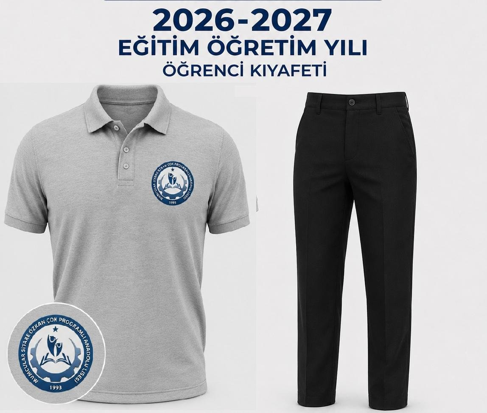

MUMCULAR SİTARE ÖZKAN ÇOK PROGRAMLI ANADOLU LİSESİ

Değerli velilerimiz ve kıymetli öğrencilerimiz, 6 Aralık 2024 tarihinde yapılan yönetmelik değişikliği ile OKUL KIYAFETLERİ ZORUNLU HALE GETİRİLMİŞTİR.
İlgili yönetmeliğe göre; Öğretmenler Kurulunda görüşülen ve okulumuzun Okul Aile Birliği Yönetim Kurulunca alınan kararlar çerçevesinde 2026-2027 Eğitim Öğretim Yılından itibaren geçerli olmak üzere okul formamızın:
• Alt kıyafet: Düz siyah renkte, herhangi bir marka, çizgi, desen veya yazı içermeyen, keten yada kot tarzında pantolon (tayt ve vücut hatlarını belirgin şekilde ortaya koymayan kıyafetler olmasına)
• Üst kıyafet: Polo yaka uzun kollu veya kısa kollu gri tişört olmasına karar verilmiştir.
Okul kıyafetinin üzerinde herhangi marka, kurum veya kuruluşa ait yazı, logo amblem içeren kıyafetler kesinlikle giyilmeyecektir.
Belirlenen kıyafet 4 yıl boyunca geçerli olacaktır.
Belirlenen tişört (polo yaka) ve pantolon Ortaöğretim Kurumları Kılık Kıyafet Yönetmeliği’ne uygun ölçülerde olacaktır. (Rengi siyah da olsa; şort, crop, alt eşofman, derin yırtmaçlı veya diz üstü etek, yırtık, delikli, şeffaf kıyafetler, kolsuz tişört veya gömlek giymek Yönetmelik’e aykırıdır.)
Bu kıyafet dışındaki giyilen çeşitli giysiler OKUL KIYAFETİ OLARAK DEĞERLENDİRİLMEYECEKTİR.
Okul güvenliği için önem arz eden okul kıyafeti kurallarına uymayan öğrencilerimiz hakkında Ortaöğretim Kurumları Yönetmeliğinin ilgili disiplin hükümleri uygulanacaktır.
Değerli velilerimiz, yapmış olduğumuz açıklamalar kapsamında, öğrencilerinizin okul kıyafeti kurallarına riayet etmesi hususunun takibinin ve gereğinin yapılmasını rica ederiz.